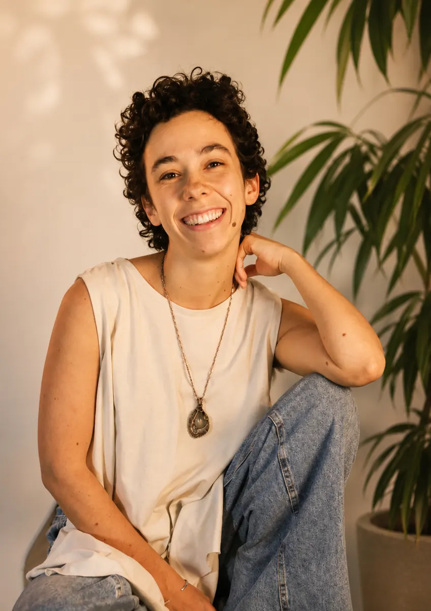
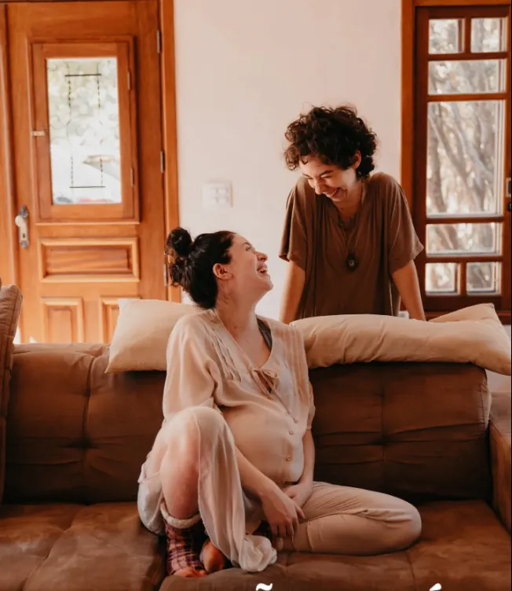
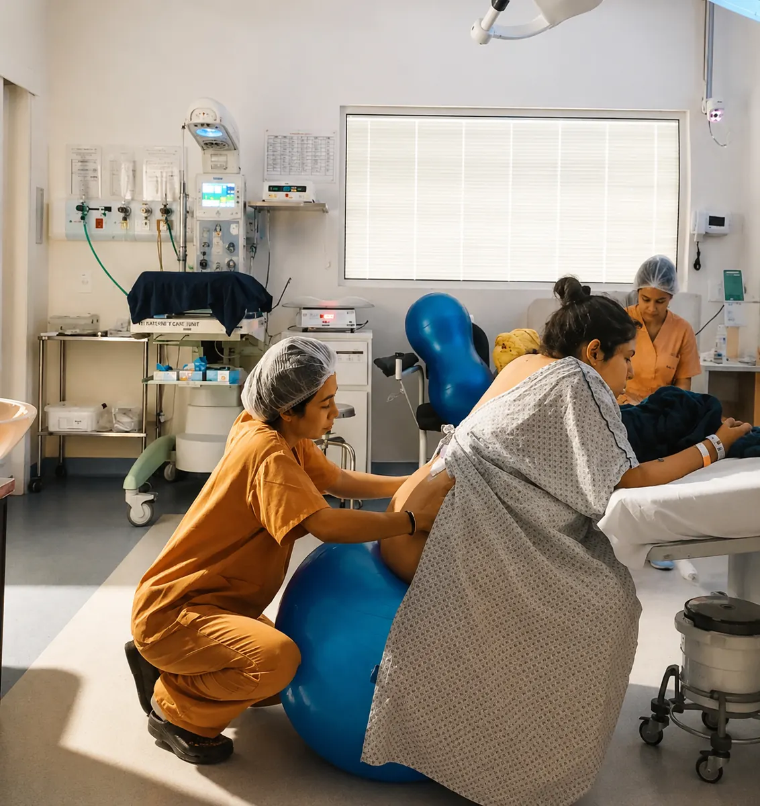
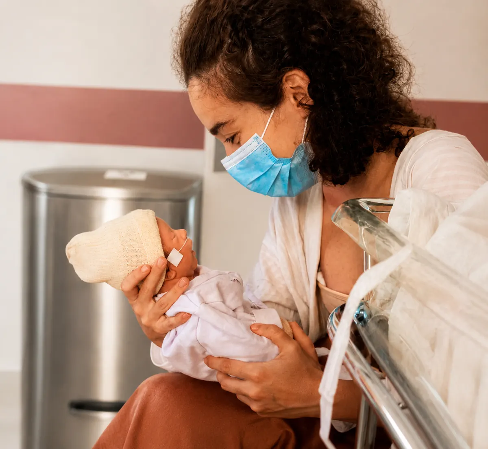
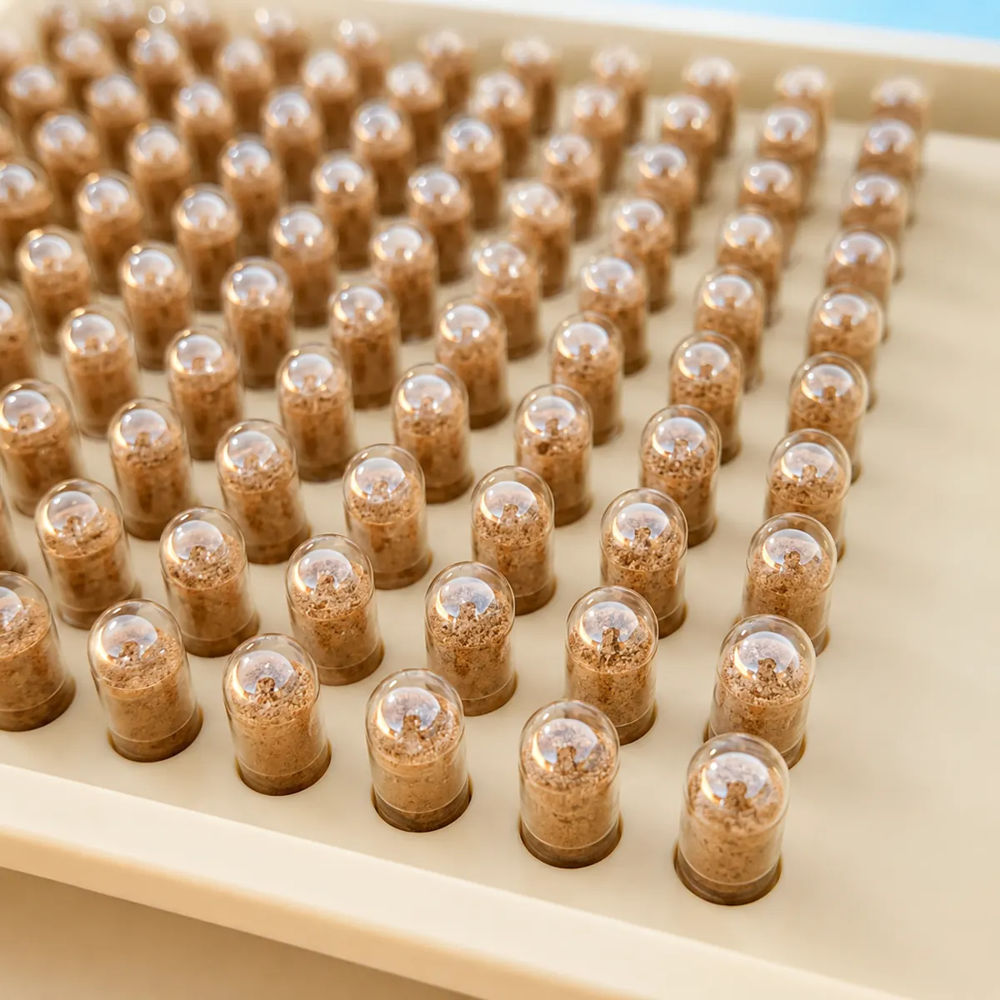
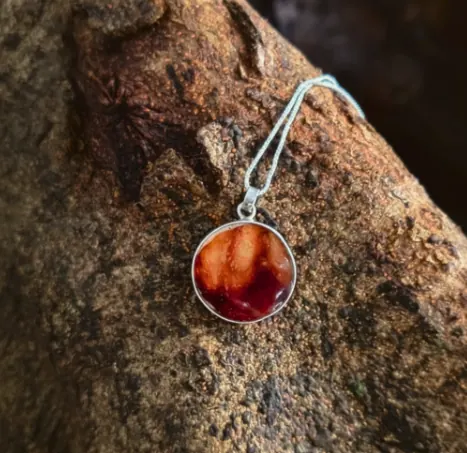
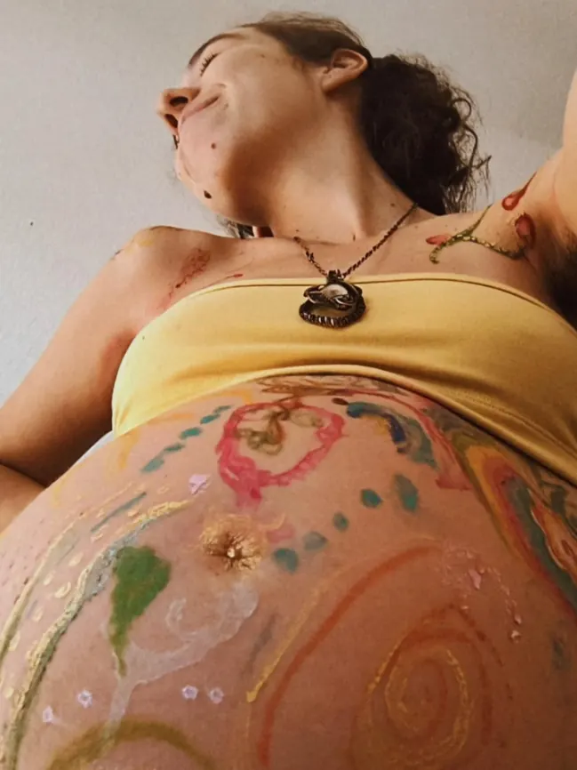

Oiê, eu sou a Anahí
Sou filha da Ivana e do Heleno, mulher, mãe da Artemísia e do Cainã e doula, dentre tantas outras que poderia citar aqui: as que já fui, as que sou e as que ainda serei.
Pari a Artemísia em casa. Foi uma escolha consciente, com informação e com uma equipe que me acompanhou. O Cainã chegou antes da hora: entrei em trabalho de parto prematuro e ele passou uns dias na UTI neonatal. O que me segurou de verdade foram as minhas pessoas.
É isso que eu levo para o meu trabalho. Mesmo quando não fica mais fácil, estar acompanhada torna as coisas mais leves.
Minha maior vontade com a doulagem é que as mulheres que chegam até mim tenham, de verdade, alguém como ponto de referência e suporte para se preparar não só para o parto, mas também para a maternidade. Não é um processo fácil, nem linear, nem óbvio. E é justamente por isso que ele me encanta: olhar para cada história e estar junto com essa família que vem nascendo.
- Atendo em Campinas e região
- Doula e educadora perinatal
- Partos em casa e no hospital
Como eu posso te acompanhar
Você pode escolher um serviço ou juntar vários. A gente conversa e monta o que faz sentido para você.
-

Acompanhamento na gestação
Encontros em casa ou online para entender o corpo, o parto e o pós-parto, montar o plano de parto e se preparar no físico e no emocional.
Saiba mais sobre o acompanhamento na gestação -

Suporte no parto
Presença contínua no trabalho de parto, com massagens, respiração e posições que ajudam, e te lembrando da sua preparação.
Saiba mais sobre o suporte no parto -

Amparo no pós-parto
Fico com vocês até a amamentação começar e a família poder descansar. Depois, sigo disponível e temos um encontro em casa.
Saiba mais sobre o amparo no pós-parto -

Cápsulas de placenta
O preparo da sua placenta em cápsulas, para quem deseja incluir esse cuidado no puerpério.
Saiba mais sobre as cápsulas de placenta -

Joia de placenta
Uma joia feita à mão com uma pequena parte da placenta, para guardar o começo dessa história.
Saiba mais sobre a joia de placenta -

Chá de bênçãos
Um encontro com as pessoas queridas da gestante para fortalecer a rede de apoio antes da chegada do bebê.
Saiba mais sobre o chá de bênçãos
Por que ter uma doula?
Num parto, cada pessoa tem um papel importante. A doula está com você durante a gestação, te preparando com informação baseada em evidências científicas e olhando para a sua história. Ela constrói confiança e vínculo com a família durante a espera para, na hora do parto, ser um porto seguro. Enquanto a equipe de saúde cuida da parte técnica, a doula está ali só para você.
-
Apoio emocional
Acolhimento, presença e escuta. Um lugar onde todos os medos e desejos podem ser ditos, sem julgamento.
-
Conforto físico
Métodos naturais de alívio da dor: massagens, respiração, rebozo, escalda-pés e posições que ajudam o parto a avançar.
-
Informação de qualidade
Educação perinatal, ajuda com o plano de parto, seus direitos e apoio para tomar decisões conscientes.
A doula não faz procedimentos médicos e não substitui a equipe de saúde. Ela trabalha junto com ela.
O que dizem as famílias que acompanhei
-
“Não consigo colocar em palavras o quanto eu sou grata por você e por seu trabalho incrível. Eu já tava super feliz com os encontros e todo o suporte antes do parto, mas realmente a sensação que fica do parto é que eu não conseguiria ter feito sem você. Cada toque seu foi maravilhoso e ajudou demaisss. Foram suas massagens que me aliviaram mais, junto com todo suporte do Rafa.”
-
“Sua presença desde o início do acompanhamento foi essencial. O Thiago também está agradecendo demais aqui todas vocês, mas em especial você.”
-
“Quero muito te agradecer por tudo, por sua medicina, por seu doular. Você foi essencial na minha jornada na partolândia. Que muitas gestantes tenham essa oportunidade de ter você com elas no processo.”
Dúvidas frequentes
Como começa o acompanhamento?
Você me manda uma mensagem e marcamos um primeiro encontro, gratuito, para a gente se conhecer. Nele eu te conto como funciona o meu trabalho e você me conta da sua gestação.
Quando devo contratar uma doula?
Quanto antes, melhor, porque assim temos tempo para construir vínculo e fazer a preparação com calma. Mas você pode me chamar em qualquer fase da gestação.
Você acompanha parto em casa e no hospital?
Sim. Cada hospital e maternidade tem suas regras para a entrada da doula, então ainda na gestação a gente verifica juntas as regras do lugar que você escolher.
A doula substitui a médica, a obstetriz ou a enfermeira?
Não. A doula cuida do seu conforto, do seu emocional e da informação. Os cuidados de saúde ficam com a sua equipe.
Os encontros podem ser online?
Sim. Para quem mora em Campinas e região, os encontros podem ser presenciais. Para quem mora longe, a preparação na gestação pode ser online.
Quanto custa?
O valor depende do que você escolher. Me chama no WhatsApp que eu te explico cada opção.
No Instagram eu conto mais
Escrevo sobre parto, pós-parto e a minha maternidade, e divulgo as rodas de gestantes.
Vamos conversar?
Me conta um pouco da sua gestação e do que você procura. Eu respondo pelo WhatsApp.
Chamar no WhatsAppPrefere escrever por aqui? Preencha o formulário e eu te respondo.
- WhatsApp: (19) 98918-5193
- Instagram: @anahicubas.doula
- Atendimento: Campinas e região